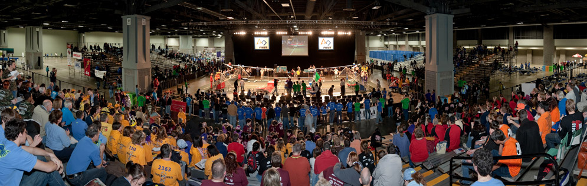
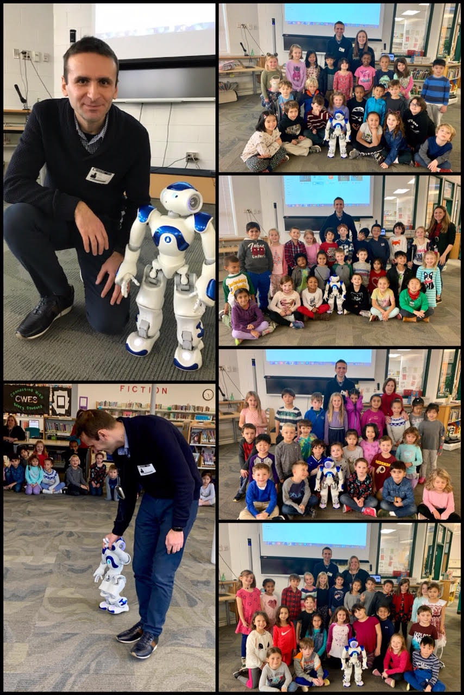

|
Erion Plaku
Program Director |
| |
Erion Plaku
Program Director |
Erion Plaku is a Program Director at the National Science Foundation (NSF) in the Directorate for Computer and Information Science and Engineering and the Division of Information and Intelligent Systems. Prior to joining NSF, Dr. Plaku was an Associate Professor in the Department of Computer Science at George Mason University (2020-2023) and in the Department of Electrical Engineering and Computer Science at the Catholic University of America (2010–2020). Dr. Plaku received his Ph.D. degree in Computer Science from Rice University (2008). He was a Postdoctoral Fellow in the Laboratory for Computational Sensing and Robotics at Johns Hopkins University (2008–2010).
DC FIRST Robotics Competition
our exhibition at the competition


Robotic Summer Camp


Canterbury Woods Elementary School (CWES)
CWES Robotics: Helped 1st grade teachers launch their first Robotics Project-Based Learning, where the kids learn about designing and creating their own model robots (Fall 2018)
CWES Math Club: Designed problem sets and taught logical-problem solving to students in grades 1-5 every week during Spring 2019 (over 30 students attended each week)
Robot Soccer

...and some real soccer